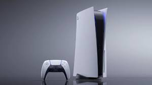

Las Consolas de Ultima Generacion
Descripcion
Es un gran momento para ser un gamer: cuando se trata de elegir una plataforma, nunca ha habido más opciones disponibles. Podrías optar por una PlayStation 5 y disfrutar de su excelente línea de exclusivas, aunque también podrías sumergirte en la profunda biblioteca de juegos de Xbox Series X (sin mencionar la fantástica oferta que es Game Pass). Dejando a un lado los fandoms, la carrera entre las dos consolas principales está más reñida de lo que piensas. Ahora, si la portabilidad es una prioridad, podrías considerar la Nintendo Switch, o incluso darle una oportunidad al Steam Deck más experimental.

PlayStation 5
¿Por qué deberías comprarla? Es la más reciente iteración de una de las consolas más populares de todos los tiempos y tiene la mejor lista de juegos de lanzamiento a la fecha en comparación con otras consolas. ¿Para quién es? Para todos. Con velocidades de carga ultrarrápidas, un nuevo control y una línea fenomenal de títulos de lanzamiento (que incluye los favoritos de los fanáticos y nuevos exclusivos), la PS5 es actualmente la mejor plataforma de juegos disponible. En primer lugar, la PS5 actualmente lleva la delantera al hablar de juegos. Los jugadores de PS5 han podido disfrutar títulos como Spider-Man: Miles Morales, Demon’s Souls y Godfall desde el primer momento, mientras que los fanáticos de Xbox han estado pidiendo juegos exclusivos como Halo Infinite y The Medium sin respuesta aún, estos se han retrasado hasta mediados del 2021. Sony también ha incorporado la compatibilidad con versiones anteriores de los juegos, además, la PS5 podrá reproducir la mayoría de los juegos de PS4, así que no te perderás títulos de la generación anterior como The Last of Us II y Ghosts of Tsushima. La PS5 tiene la mejor biblioteca de juegos que existe en este momento. Sin embargo, la sólida lista de juegos de lanzamiento es solo una parte de la ecuación. Ligeramente más grande que el DualShock 4, el nuevo control DualSense refina la retroalimentación háptica, incorporando en la experiencia de juego un sentido preciso del tacto, algo que la retroalimentación de fuerza nunca logró. Si estás agotando tu barra de resistencia al tirar de la cuerda de un arco o intentando derribar una puerta cerrada, por ejemplo, los gatillos del control pueden transmitir esa tensión. La nueva tecnología, combinada con el continuo soporte para PSVR, ofrece una experiencia de juego más inmersiva.